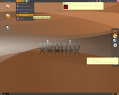

1
Archivierte Anleitung
Dieser Artikel wurde archiviert, da er - oder Teile daraus - nur noch unter einer älteren Ubuntu-Version nutzbar ist. Diese Anleitung wird vom Wiki-Team weder auf Richtigkeit überprüft noch anderweitig gepflegt. Zusätzlich wurde der Artikel für weitere Änderungen gesperrt.
 Sammlung von Screenshots - Ubuntu (ab 11.04 inkl. Unity)
Sammlung von Screenshots - Ubuntu (ab 11.04 inkl. Unity)
Weitere Bildergalerien: Kubuntu, Xubuntu, Lubuntu und *buntu
| Ubuntu | ||||
| Screenshot | Informationen | |||
| Version: | Jaunty Jackalope 9.04 | |||
| Thema: | Biergarten   | |||
| Icons: | area43 (von mir angepasst) | |||
| Mauszeiger: | DMZ white | |||
| Wallpaper: | Autumn widescreen wallpapers | |||
| Anwendungen: | AWN, Terminal, Conky, Sonata und Epiphany | |||
| Anleitung: | conky Script ist inkl. Anleitung im "Biergarten"-Pack enthalten | |||
| Version: | Jaunty Jackalope 9.04 | |||
| Thema: | Tinted Glass | |||
| Icons: | Humanoid 3.0 | |||
| Mauszeiger: | Chrome Glass | |||
| Wallpaper: | Drops in the net | |||
| Anwendungen: | Dock: GNOME Do, Musik: Rhythmbox mit Cover-Plugin, Emerald für das Fenster Thema 'Tinted Glass' | |||
| Anleitung: | Damit das Thema "Tinted" Glass beim Systemstart automatisch läuft, muss unter System->Einstellungen->Startprogramme ein neuer Eintrag mit dem Inhalt: "emerald --replace" gesetzt werden. | |||
| Version: | Jaunty Jackalope 9.04 | |||
| Thema: | Dust | |||
| Icons: | Human | |||
| Wallpaper: | Leaf Curl | |||
| Anwendungen: | ScummVM - Anwendungen für das Panel | |||
| Anleitung: | - | |||
| Version: | Jaunty Jackalope 9.04 | |||
| Thema: | Wasp | |||
| Icons: | Humanoid | |||
| Wallpaper: | Wood Pattern | |||
| Anwendungen: | Dock: Gnome-Do, Musik: Rhythmbox mit Cover-Plugin, CPU-Anzeige: Screenlets, Datendurchsatz: netspeed-Applet | |||
| Anleitung: | - | |||
| Version: | Jaunty Jackalope 9.04 | |||
| Thema: | Metal | |||
| Icons: | Royale Blue | |||
| Wallpaper: | J1g | |||
| Anwendungen: | Avant Window Navigator, Rhythmbox, Screenlets | |||
| Anleitung: | - | |||
| Version: | Hardy Heron 8.04 | |||
| Thema: | Murrina Deviant | |||
| Icons: | Human | |||
| Wallpaper: | Chess Globe | |||
| Anwendungen: | Exaile, Pidgin, Terminal | |||
| Anleitung: | - | |||
| Version: | Gutsy Gibbon 7.10 | |||
| Thema: | Slicknees Black | |||
| Icons: | Black-White 2 Style | |||
| Wallpaper: | Sleek Dragon | |||
| Anwendungen: | Oben: Menüs, Opera, Firefox, Thunderbird, Evolution, Hilfe; Desktop: ein Terminal und eine Statusanzeige per Conky; Unten: Desktop anzeigen, Anwendungen, Music-Applet für Rhythmbox, Desktops, Müll | |||
| Anleitung: | Das Thema und die Icons installieren, eine .conkyrc-Datei sich anlegen. Mit Devil's Pie das Terminal dem Desktop anpassen. | |||
| Version: | Gutsy Gibbon 7.10 | |||
| Thema: | Dark and Nameless | |||
| Icons: | black-white | |||
| Wallpaper: | Curls on Green | |||
| Anwendungen: | GIMP 2.4.2 | |||
| Anleitung: | Das Thema wird über Emerald geladen. | |||
|  | Version: | Gutsy Gibbon 7.10 | ||
| Thema: | ClearlooksClassic, Caramello Clearlooks als Fensterrahmen. | |||
| Icons: | Human | |||
| Wallpaper: | Ubuntu Waves | |||
| Anwendungen: | Rechts ein drittes Panel (Auto-Verbergen), mit Zattoo Player, Sound Juicer, Totem als Video-Player, Serpentine und Music-Applet für Rhythmbox. | |||
| Anleitung: | ClearlooksClassic mit den Farben: Fenster = #42413F / #BFBCB7, Eingabefelder = #FFFFFF / #000000, Gewählte Einträge = #D67C21 / #FFFFFF, Minihilfen = #FFFFBF / #000000. | |||
| Version: | Gutsy Gibbon 7.10 | |||
| Thema: | GTK2 Clearlooks, Unity Metacity | |||
| Icons: | Gnome | |||
| Wallpaper: | Travel Pack by petercui | |||
| Anwendungen: | Die Anzeigen für Uhr, Festplattenspeicher und Wetter sind Screenlets. Dock am unteren Bildschirmrand Avant Window Navigator. Die Anzeigen im Panel für Temperaturen nennen sich "sensors-applet". | |||
| Anleitung: | Um auch Schriften, wie hier Trebuchet, auf einem LCD schön aussehen zu lassen, geht man im Fenster "Erscheinungsbild" unter "Schriftarten" unten auf "Details..." und stellt "Subpixel" und geringes Hinting ein. | |||
| Version: | Gutsy Gibbon 7.10 | |||
| Thema: | Clearlooks, Farben angepasst | |||
| Icons: | Human | |||
| Wallpaper: | OrangeSpirit | |||
| Anwendungen: | Epiphany | |||
| Anleitung: | Die Farben vieler GNOME Themen kann man sehr einfach unter "System -> Einstellungen -> Erscheinungsbild -> Anpassen -> Farben" an die eigenen Wünsche anpassen. | |||
| Version: | Gutsy Gibbon 7.10 (Ubuntu Studio) | |||
| Thema: | Ubuntu Studio Artwork (Feisty Fawn) | |||
| Icons: | Ubuntu Studio Artwork (Feisty Fawn) | |||
| Wallpaper: | Ubuntu Studio Artwork (Gutsy Gibbon) | |||
| Anwendungen: | Aqualung , Hydrogen | |||
| Anleitung: | - | |||
 | Version: | Gutsy Gibbon 7.10 | ||
| Thema: | GTK2 - Light Coffee Murrina - Light Coffee Emerald theme | |||
| Icons: | nuoveXT 2 | |||
| Wallpaper: | Hardwood lights | |||
| Anwendungen: | Firefox | |||
| Anleitung: | Als Desktop-Schriftart unter "System -> Einstellungen -> Erscheinungsbild" "Purisa" eingestellt | |||
| Version: | Feisty Fawn 7.04 | |||
| Thema: | Murrina Gperfection | |||
| Icons: | Gnome | |||
| Wallpaper: | Slip/Trip Into Something (A Little More) | |||
| Anwendungen: | Oben: Menüs, Firefox, Gedit, Wetter, xkill (Firefox+Flash=Absturz), Traffic, CPU, Thunderbird, Energieinformationen, Lautstärke, Uhrzeit; Desktop: Nautilus; Unten: Desktop anzeigen, Anwendungen, Desktops, Müll | |||
| Anleitung: | Die Murrine-Engine Installieren, Gperfection (gibts auf Gnome-Look) runterladen und aktivieren, Icon-Set auswählen, Wallpaper einstellen. Openbox und dessen Themes installieren (ist in den Paketquellen), über Obconf cukoo-spit auswählen, Button-Order: NLDIMC | |||
{kind=link}
| << zurück |
- Erstellt mit Inyoka
-
 2004 – 2017 ubuntuusers.de • Einige Rechte vorbehalten
2004 – 2017 ubuntuusers.de • Einige Rechte vorbehalten
Lizenz • Kontakt • Datenschutz • Impressum • Serverstatus -
Serverhousing gespendet von